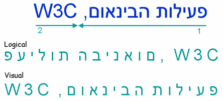
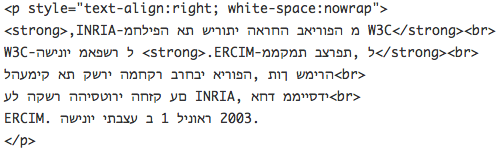

Intended audience: HTML coders (using editors or scripting), script developers (PHP, JSP, etc.), Web project managers, and anyone who needs to better understand the difference between visual and logical storage of bidirectional text..
What is the difference between visual and logical ordering of text, and which should I use?
Bidirectional text is commonplace in right-to-left scripts such as Arabic, Hebrew, Syriac, and Thaana. Numerous different languages are written with these scripts, including Arabic, Hebrew, Pashto, Persian, Sindhi, Syriac, Dhivehi, Urdu, Yiddish, etc.
When bidirectional text is displayed, any embedded text from a left-to-right script and all numbers progress visually left-to-right within the general right-to-left visual flow of the aforementioned scripts. (Of course, the English text on this page also contains bidirectional text where it includes Arabic and Hebrew examples.)
You should always create HTML (and any other type of markup) using logical ordering, and never use visual.
Visual ordering of text was a common way of representing Hebrew in HTML on old user agents that didn't support the Unicode bidirectional algorithm. Relatively little persists today. Characters making up the text were stored in the source code in the same order you would see them displayed on screen when looking from left to right.
(Visual ordering less common for Arabic. Since the Arabic letters are all joined up there was a stronger motivation on the part of Arabic implementers to enable the logical ordering approach. Visually ordered Arabic text may use separate code points for each shaped glyph.)
With logical ordering, text is stored in memory in the order in which it would normally be typed (and usually pronounced). The Unicode bidirectional algorithm is then applied by the browser, at display time, to produce the correct visual display.
The following picture shows the bidirectional phrase פעילות הבינאום, W3C at the top in blue, as it would normally appear when displayed in a right-to-left paragraph. The numbered arrows show the reading direction. You read the sequences in the order of the numbers below the arrows.
The second and third lines (green text) show the order in which characters are stored in memory (from left to right in the visualization) for logical and visual encoded text, respectively. The logical order also reflects the order in which you would type the text as a content author. The same is true of the visual line, ie. you type the text backwards (unless you have an editing tool that automatically rearranges logical input to visual storage order for you).

The following image shows an example of visually ordered source code in HTML.

To make visual ordering work, in addition to writing the text backwards, you must also do such things as disable any line wrapping, explicitly right-align text in paragraphs and table cells, add explicit line breaks, and, when translating from a language that uses a left-to-right script, manually reverse the order of table columns. You also have to add and maintain separate spans of link or emphasis markup for any marked up text that wraps onto another line.
(This is actually a fairly clean implementation. For example you can also find such things as right-aligned paragraphs with <nobr>..</nobr> tags around each line. If your window is too narrow, the beginning of each line disappears off the right side of the browser.)
A key issue relates to maintenance. For example, apart from the difficulty of typing the Hebrew backwards, if you want to add a few words in the middle of a paragraph of visually ordered text, you would have to move text to and from every line that followed it in the paragraph in order to reset the line breaks. You would also have to manually rearrange any inline markup that spans more than one line (either before or after the change).
The result is very fragile code that is difficult to maintain.
In addition, all the extra tags needed to manage the text would bloat your code and impact not only authoring time, but also bandwidth.
Visual ordering can also cause problems at a higher level. For example, it requires the order of table columns to be manually reversed when translating into another language. Line breaks will also need to be manually re-flowed if the page geometry changes. Often the search dialog of browsers captures text in logical order, which causes the search key not to match the text stored in visual order, unless there is special logic in the browser to handle this issue. Etc.
Using logically ordered text, on the other hand, makes it almost trivial to create long paragraphs of flowing text that automatically wrap to the width of the block element. It also makes it much easier to address accessibility, using such things as screen readers. You simply type the text in the spoken order, and the Unicode Bidirectional Algorithm does all the heavy lifting for you.
In modern systems where backend storage includes legacy data (created at some point using green screens) represented in visual order (such as mainframes or iSeries computers) it is necessary to support bidirectional flow of data between the back end (visual ordering) and web front end (logical ordering).
Various factors may be involved in this process, besides the order of the characters themselves. This level of detail is beyond the scope of the question that frames this article, but you can find useful additional information in a helpful email from Tomer Mahlin, of the IBM Bidi Development Lab.
We always recommend that you use UTF-8 as the character encoding of your page, which supports logical ordering of characters, but if, and only if, you choose to use an ISO 8859
encoding instead, you need to take some care in declaring the encoding. You declare the encoding of your content either in the HTTP header or in a meta element inside the document (or both).
There are special conventions with regard to the encoding declarations used for Hebrew text that relate to the visual vs. logical ordering question. A declaration of ISO-8859-8 would indicate that the text is visually encoded. For logically-ordered content using the ISO encodings you must label ISO-encoded text as ISO-8859-8-i.
Tutorial, Creating HTML Pages in Arabic, Hebrew and Other Right-to-left Scripts
Related links, Authoring HTML & CSS